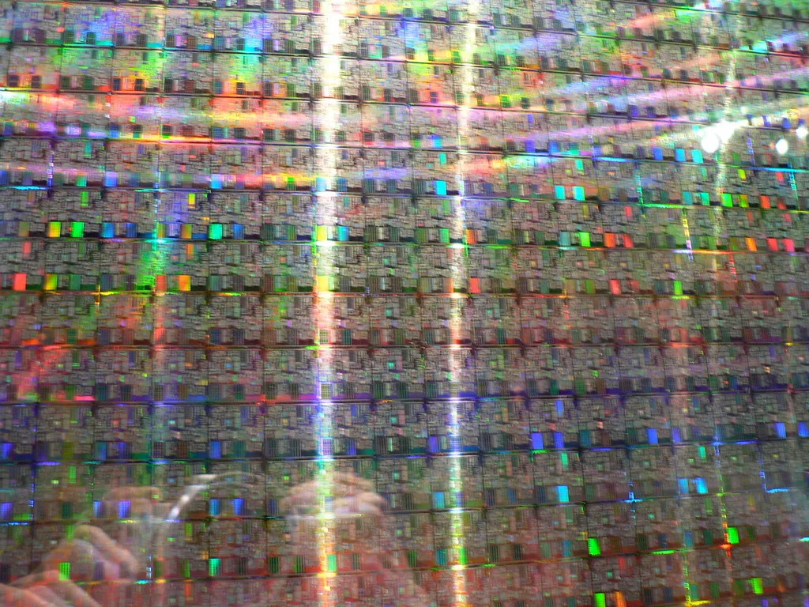
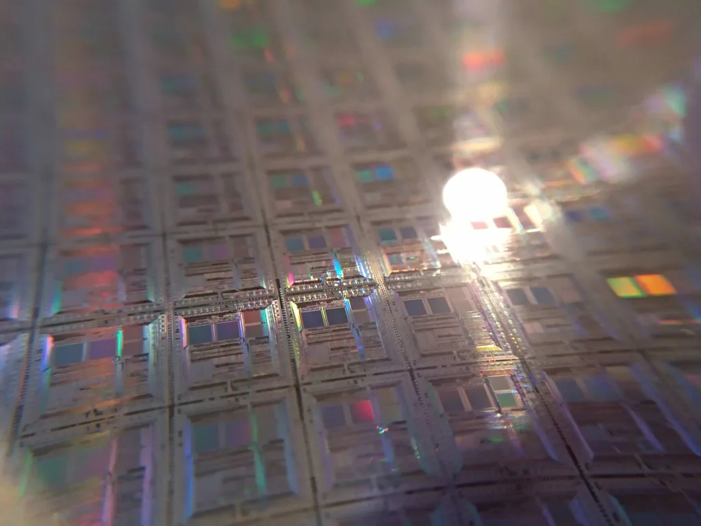

SK하이닉스, 솔리다임 美 상장 철회…"주주가치 우선"
SK하이닉스가 자회사 솔리다임의 미국 증시 상장을 위한 검토 절차를 전격 중단했다. 회사 측은 공시를 통해 "최근 자본시장 여건과 주가 흐름을 고려할 때 현재 기업공개(IPO)가 회사와 기존 주주에게 가장 유리한 선택인지 재검토할 필요가 있다고 판단했다"고 밝혔다. 솔리다임의 상장 추진 사실이 외부에 알려진 지 78일 만에 나온 결정으로, 그동안 꾸준히 제기돼 온 주주들의 반발이 결국 회사의 방향 전환을 이끌어낸 것으로 풀이된다. 불과 두 달여 전까지만 해도 상장 준비가 순조롭게 진행되고 있다는 전망이 나왔던 만큼, 이번 철회는 시장에 적지 않은 충격을 안겼다.
솔리다임은 SK하이닉스가 2021년 인텔의 낸드플래시 사업을 인수하며 출범시킨 자회사다. 낸드 기반 저장장치 시장에서 입지를 다져온 솔리다임은 현재 SK하이닉스 전체 기업가치의 12.9%를 차지하는 비중 있는 사업부로 성장했다. 당초 SK하이닉스는 낸드 사업 부문의 독자적인 성장 동력을 확보하고 투자 재원을 마련하기 위해 솔리다임을 별도로 상장하는 방안을 검토해 왔다. 메모리 반도체 업황이 회복세를 보이는 가운데 낸드 분야에서도 공격적인 설비 투자가 필요하다는 판단이 상장 추진의 배경으로 꼽혔었다.

그러나 상장 추진 소식이 알려진 이후 주주들 사이에서는 '중복 상장'에 대한 우려가 거세게 제기됐다. 솔리다임이 별도로 상장하면 이미 SK하이닉스 지분을 보유한 주주들이 솔리다임 지분 가치를 다시 한번 나눠 가지는 셈이 되어, 모회사인 SK하이닉스 주가가 전체 자산 가치를 제대로 반영하지 못하게 될 수 있다는 지적이었다. 이러한 구조는 과거 다른 대기업의 자회사 분할 상장 때도 반복적으로 논란이 됐던 사안이다.
여기에 금융당국의 견제도 상장 철회에 영향을 미쳤다. 금융위원회와 금융감독원 수장이 잇따라 중복상장 문제를 공개적으로 지적하며 제동을 걸자, SK하이닉스는 상장 추진 방향을 재검토하는 쪽으로 선회한 것으로 전해졌다. 자본시장 전반에서 모자회사 동시 상장에 대한 규제·여론의 시선이 곱지 않은 상황이 이번 결정의 배경이 됐다는 분석이다.

상장 철회 이후 SK하이닉스는 기존 주주들의 신뢰를 회복하기 위한 다른 방안 마련에 나설 것으로 보인다. 시장에서는 자사주 매입이나 배당 확대 등 직접적인 주주환원 정책이 솔리다임 상장을 대신할 '플랜B'로 거론되고 있다. 솔리다임의 낸드 사업 투자 재원 확보 역시 별도 상장 없이 그룹 내 자금 조달이나 다른 파트너십을 통해 해결해야 하는 과제로 남게 됐다.
이번 결정은 최근 반도체 업종 전반이 미국 증시發 AI주 투매 여파로 큰 변동성을 겪고 있는 시점에 나왔다는 점에서도 주목된다. 상장 중단이 SK하이닉스 주가에 어떤 영향을 미칠지에 대해서는 시장의 해석이 엇갈리지만, 중복 상장 리스크가 해소됐다는 점을 긍정적으로 보는 시각과 낸드 투자 재원 확보에 차질이 생길 수 있다는 우려가 함께 나오고 있다. 증권가에서는 이번 철회가 단기적으로는 주주 달래기 효과를 내겠지만, 중장기적으로 낸드 사업 투자 재원을 어떻게 조달할지가 SK하이닉스의 다음 과제로 남을 것이라는 분석을 내놓고 있다.